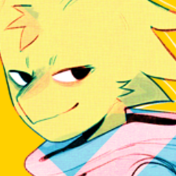

BIENVENIDO.exe
_ [] X

HOLA.
Soy Ryoban. Artista conceptual y el unico imbecil a cargo de esto. Anteriormente familiarizado con las firmas de Moru Y Khoa. Este espacio esta dedicado a todas las personas que encuentren interesante desaparecer de toda la mierda generalizada de la web convencional.
DIRECTORIO_DE_ARCHIVOS
| Nombre | Descripción | Tipo |
|---|---|---|
| PARAXTERRA | PARAX ° Terra (tierra paralela). Un proyecto que ha estado mutando desde el año 2022.La historia sigue a Adeline, una Yatarka del sur, que se autoimplica en la delicada tarea de dormir en un mundo donde el sol se ha quedado estatico en un mismo lugar desde hace miles de años. | PROYECTO |
| MÚSICA | Tracks y beats para escuchar. La mayoria de canciones que he estado esuchando desde hace 12 años, algunas implicaron cambios radicales en mis personajes, digamos que este espacio es un tributo deciso a aquellas canciones que me marcaron significativamente. | AUDIO |
| BLOG | Pensamientos y cosas pasajeras. | TXT |
| PERSONAJES | Perfiles actuales | Perfiles |